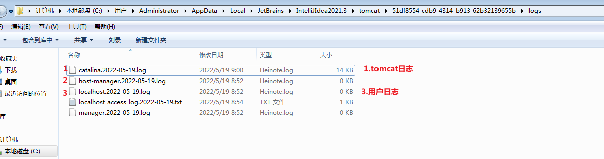
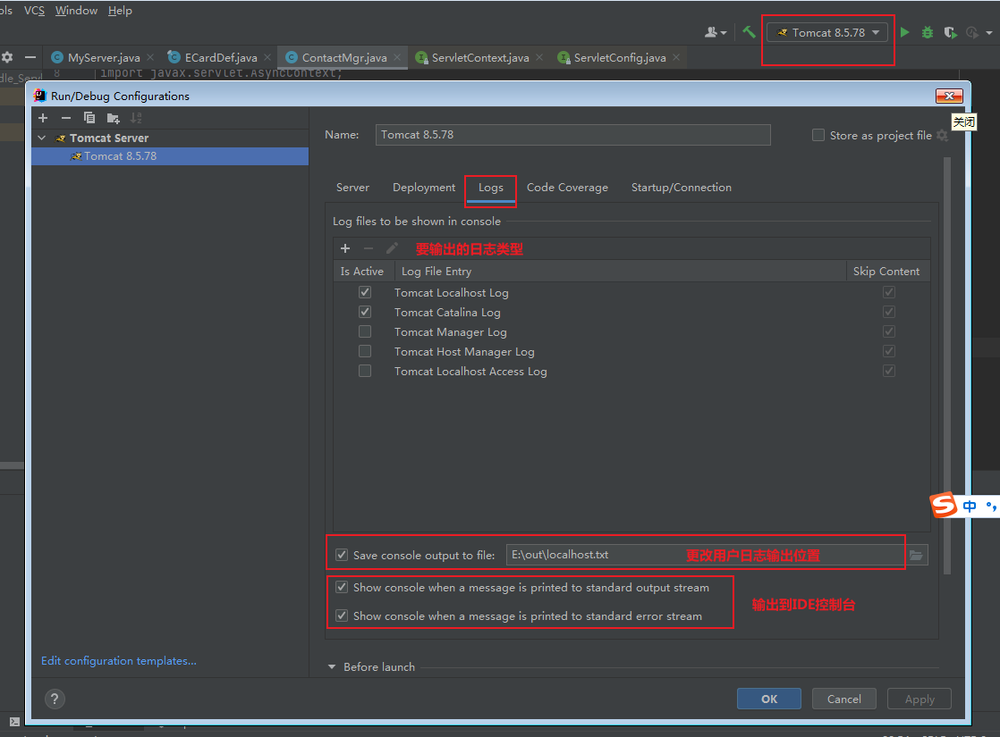
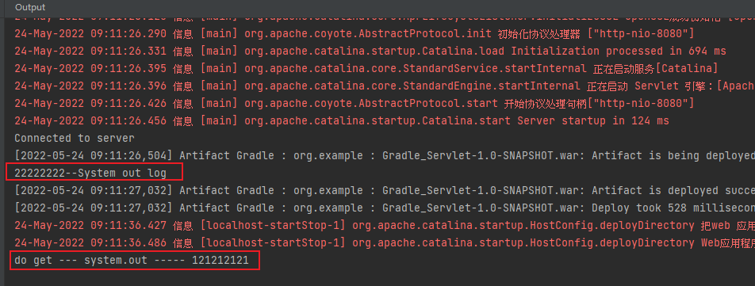
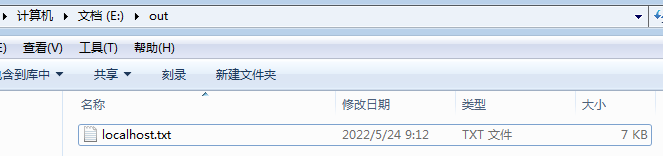
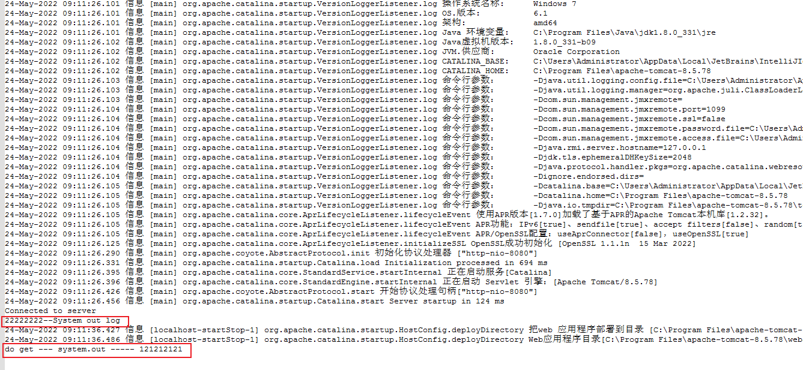
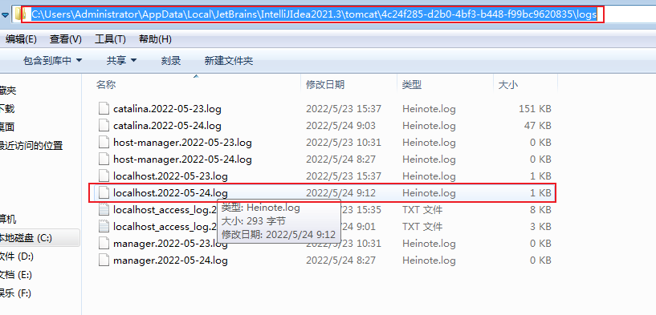
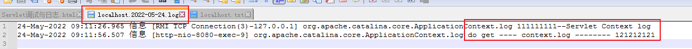

Servlet调试与日志
默认情况下，IDE只是将Servlet程序部署到tomcat中去执行，所以日志不会打印在IDE的console中，而是输出到了tomcat目录下的logs文件夹中
-
如果通过IDEA运行，默认情况下则日志文件会输出到如下路径，而控制台中并不会显示日志

-
通过更改配置，我们将用户日志输出到控制台，也可以更改用户日志的输出位置

-
更改设置之后，控制台输出了 tomcat日志 和 System.out日志

-
可以看到，在指定的输出位置，输出了 tomcat日志 和 System.out日志(和IDE中的控制台日志一样)，但是ServletContext.log并没有写入这个日志中


-
ServletContext.log其实写入了编辑器日志目录下

